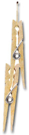

On rare occasions during windstorms, a strong gust of wind down the vent blows out the pilot light in our water heater. Getting the lighted match back into the pilot light area can be bothersome as the gas jet is located back toward the center of the tank. By simply attaching two clothespins to a match, a "match extender" can be made. Just light the match and apply the flame to the proper location under the pilot light gas jet while holding the pilot valve on.
Arthur Lee
Santa Cruz, CA
|
 |
|
|